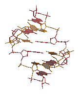

RINGS3D
SYNOPSIS
rings3d
searches through a PDB file looking for residues containing 5- or 6-membered
rings, then produces a Raster3D output file of ring-filling triangles.
rings3d [-bases] [-protein] [-sugars] < infile.pdb > outfile.r3d
rings3d matches residue types from an internal list of residue and atom names.
It will fail to find residues not in its list, and fail to recognize atoms with
non-standard names.

EXAMPLES
render a DNA molecule with the bases filled in:
cat $R3D_LIB/dna.colours dna.pdb | rods -radius 0.05 > temp.1
rings3d -bases < dna.pdb > temp.2
cat temp.1 temp.2 | render -tiff dna.tiff
OPTIONS
- -bases
- Fills in purine and pyrimidine rings from A C G T U residues.
- -protein
- Fills in sidechain rings of HIS PHE TRP and TYR residues.
- -sugars
- [This is the default]
Fills in pyranose rings of GAL GLC NAG NGA MAN SIA residues.
BUGS
- limited residue types
- The database of residue types should be kept externally, so you
don't have to rebuild the program to add a new type.
- There should be an option to search for ring systems in un-recognized
residue types.
- crinkled planes
- There should be an option to do a least-squares best plane through
supposedly flat rings. Then again, seeing a crease in a "flat" ring
may force people to consider whether their planarity restraints are
tight enough.
AUTHORS
Ethan A Merritt.
 Back to top
Back to top
 Raster3D homepage
Raster3D homepage